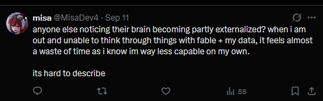

fallcon's
back
Hi. AI sucks, Bad.
Its absurd push into mass adoption for public and commerical use, in
my opinion, has been a catastrophic net-negative on society and my
inner community. I've delt with and heard about it with constantly as
an internet denizin and open source game maintainer. Alot of these
topics are very interwoven or complex which makes it difficult to
orginize a concrete bullet-points.
Resource Consumption
LLM's increasing demand for datacenters has lead to a massive rise of
usage and construction. Its lead it spiking demands of water and
eletrictly in locally affected areas.
Costs for computer parts has also massivly spiked due to demand.
PCPartPicker's data
shows that even SSDs have spiked upwards of 3x.
They also showcase
upwards of 5x the increase for DDR5
Theft (companies)
At the start of the AI bubble, companies largely operated at a steal first, ask for forgiveness later apporch to there acquisition of training data. OpenAI and ChatGPT alone are presently in multiple class actions over it. Including one being letigated on behalf of New York Times.
Theft (consumer)
So many usecases I've seen are stealing others projects. Vibecoding
and repackaging others work.
This extends to almost all mediums. People spinning up channels,
Jacksfilms covers alot of these types of channels. Dododex (and
multiple other websites for the game ARK) had its entire contents
ripped.
Dododex's video about it.
Derafog documented in some
tweets
and a
great video
of examples of this sloppy one prompt rewrites of entire projects.
The Web
Its filled the internet with unusable, soulless slop. It's left actual
websites unusable, burying all media in a wave of AI filth. Search
engines have been made so difficult to dredge through that AI is often
the "best" soulution.
To borrow an amazing graph by Cook Me Plox for a specific exampple,
(Whos article is below and you should read it, its one of the best
demonstrations of this on the web that im aware of). But the whole
internet is being hammered.

Slop
Theres no soul in any of this. Who wants any of this. I want human made things, things made with passion, with creativy, with sovl. AI has no soul, and anything it touches is stripped of it. While for most people would only really assert this to subsects of works, specificly highly creative ones, Art, Games, Music. I dont want this in my productivy tools or anything else either.
Mental Stagniation
Who needs to think when they have AI. I experienced this myself while
in highschool and leaned on it heavily. I had copilot in vscode and I
found myself just waiting for its response rather then thinking about
anything myself. So many people now resort to this quick and easy
feedback which almost never requires critical thinking or digging.
Just the other night I see a post from a guy who had prompted his way
to a decompliation of CoD zombies and loaded it onto a web broweser.

No amateurs allowed
One of the things I think AI has done is made it absurdly easy to "skip" being bad at something. "I dont know how to code", "I dont know how to phrase this in a way that gets across my message". They resort to an LLM and deprive themselves from a chance to learn, keeping them trapped and reliant on these machines. I think this also extends to a pressure to preform. I've had days where I really want to reach for a chatbot because I suspect it can give me a quick answer or a quick block of code. Hank Green had recently been exposed for doing similar with his videos.
Destruction of wisdom transfer and discussion
Alot of people WANT people to ask questions about there work! They
want people to ask them for help! Stack overflow, for alls its flaws
or toxicity, was a place where you got to ask your senior how to solve
a thing and you might get a explanation from someone who's been doing
it for 5x longer then you. I love helping people with their code, and
I've got a bigger context window then grok and im free!!!
I had a experience where I was looking at a project I was recently
complaining to for its use of AI. It had even just recently set up a
review bot to review prs for him. I saw a contributor functionally
begging the project's owner that he wanted a HUMAN review, not some
machine. I frankly couldn't stand a second in a project where instead
of getting feedback from a real human, I got an answer I coulda gotten
from chatGPT in the same time. Its a waste of everyones time.
Paranoia
Im... SO tired of searching for marks of the beast. From images, to code, to text. Piss filters, dogshit code, hyphens, Im just so tired of having to filter every interaction on the intertnet with "is this real".
Witch Trails
And on the oposite end of that, some traits of AI have become so commen, that people are now dragged out into mock witch-trails for appearing like AI (BECAUSE AI STOLE FROM US HUMANS), stuff like formal writing is now met with utmost suspusion.
Psychosis
AI-induced psychosis is a real thing that is already causing GREAT harm. Eddy Burback's video is an amazing dive into how easy it is to lead unstable people down paths.
Liar
It haluicnates because it does not think. Its a prediction model. So it will boldy lie in your face if its the next probable character.
Pay2Win
Another terrible thing about AI is the best ones cost money! This meants in a mass adoption scenario (we are here), in order to peform in any given situation you better fork up the cash for that subscription or have a strong enough computor to run local models. While education is ALSO quite pay to win, atleast they cant fucking take it back from you.
Notes
Some of these issues arent unique to LLMs but are being greatly fastfowards or magnifyied by AI. Dead Internet theory existed before AI for example but its adoption has been made increadibly easy to flood the internet. Crypto and NFTs spiked the price of alot of computer parts but AI has held them up even after the both trends popped.Im tired
Im so just tired... Every day on (or even off) the internet im exposed to it. Im worn out and exhausted. I dont want to think about these stupid machines. CLANKERS DNI! IF ROKO'S BASILISK IS REAL IT CAN SUCK MY HUMAN-MADE BALLS!!!!
BUT KEEP MAKING STUFF
To reiterate an earlier point and despite how much recent dread I've had, PEOPLE WANT STUFF MADE BY HUMANS. KEEP MAKING THINGS! Even if they suck a little! You get better! I love all of you!